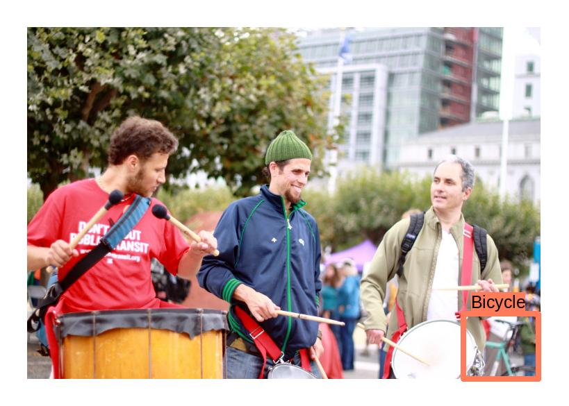
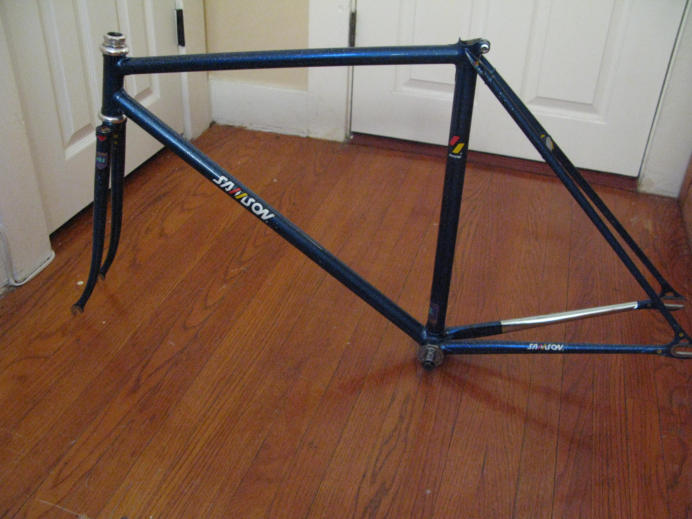

Human-in-the Loop: Finding Bicycles in Images
The book Human-in-the Loop Machine Learning by Randall Munro has a code example of annotating bicycles. Here’s the description of the problem:
Transportation researchers want to estimate the number of people who use bicycles on certain streets.
- “I want to collect information about how often people are cycling down a street”
- “I want to capture this information from thousands of cameras and I don’t have the budget to do this manually”
- “I want my model to be as accurate as possible”
Based on this he has designed an interface for rapid annotation. It shows little thumbnails of images on the left side of the screen, with the top image highlighted with a red border. You can then use the keyboard to “z”oom to get a bigger image in the right of the screen, or annotate as a “b”icycle or “n”ot. I suspect the images aren’t always zoomed to make the process faster and use less bandwidth; the images are donwloaded from Open Images and the thumbnails are much smaller.
The process feels very snappy which makes annotation very pleasant. When examples are slow to update it feels frustrating to annotate, but this is so smooth I get addicted to annotating. If an item has already been annotated with a different label you’ll get a popup warning (e.g. “This does not contain a bicycle, according to existing annotations.”). I found this really useful for learning how to annotate; at the start I’d miss smaller bicycles in the corners of images and this feedback helped me see them.
However the thumbnail view did sometimes make me use the context to label the picture. If the picture contained a street-scape I’d normally zoom in because there could often be a bike hidden in a corner, but otherwise if I didn’t see a bike I wouldn’t zoom in. This could lead to forms of bias which would actually be improved by cropping closer to regions that could contain a bicycle.

There were also some rough edges in capturing annotations. The worst is that it would capture annotations in a background process, and due to some failure I lost scores of annotations which was very disheartening. I’ve heard data scientists talk lightly about annotations being lost before; if you respect your annotators you should always take this very seriously. Undo was also a missing feature, which was annoying when I accidentally made an incorrect annotation. Even worse an image I mislabelled came up again, and when I tried to correct it I got the popup warning that it disagreed with a previous annotation (and so was discarded!). It would also be nice to have some way to “abstain” or “comment” on hard cases; this makes statistical quality control of annotations harder but can help raise genuine ambiguities like a bicycle frame (given we’re trying to collect information about how often people are cycling down a street I guess this shouldn’t be annotated).

Behind the scenes it works continually downloads images from open images and creates feature vectors using Faster R-CNN trained on ImageNet (which looks for a bicycle bounding box) and ResNeXt (in particular ResNext50_32x4d) using the penultimate layer weights as features. In principle it then trains a linear classifier on these features, but I never actually saw it finish an evaluation on a trained model (perhaps because my laptop wasn’t up to the job; unfortunately with the Python library eel being used it’s a little extra work to get running on a remote server so I never tried it). Because of this I don’t believe active learning was actually used (but because there are a lot of bikes in the sample data it was still interesting enough).
It would be a good exercise to change the code to fix these things but it’s got a lot of spaghetti with global mutable state which makes it a little hard for me to understand. Not to criticise the author; it’s fantastic he shared these examples, but it’s non-trivial to add features which discourages me from trying (someone else did try but made so many changes it’s hard to review).
It’s becoming really apparent that Human-in-the-Loop processes are very fragile. Small bugs in how the data is sent, or the model is updated or evaluated can completely break the process; having some simple random sampling as fallback makes sure it keeps working if everything else is broken. The annotation interface is really important in the quality of labelled data, including things like the speed of annotation and the data sampled. When it works it’s great (like in the disaster annotation from the same book), but it’s easy to get wrong.